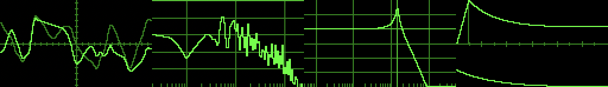
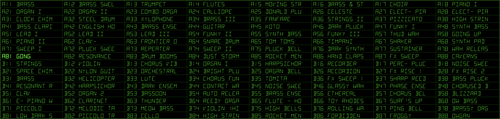
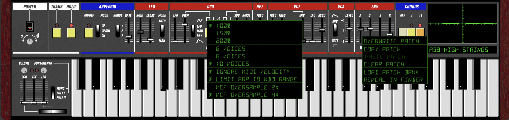

Ultramaster KR-106
User's Guide
Controls

Power & Tuning
Power Turns the synth on and off. All voices are silenced when off.
Tuning Fine-tune the master pitch up or down.
Performance
Master Volume Output level. The red LED indicates clipping.
Portamento Rate Glide speed between notes.
Portamento Mode 3-way switch: Off (polyphonic), Poly I (portamento, last-note priority), Poly II (portamento, low-note priority).
Bender
Lever Horizontal pitch bend. Push up to trigger LFO vibrato (mod wheel).
DCO / VCF / LFO Sensitivity sliders control how much the bender affects pitch, filter cutoff, and LFO depth.
Arpeggiator
Transpose When lit, clicking a key sets the transpose root instead of playing a note. Click C to reset.
Hold Notes sustain after release. Click a held key again to release it individually.
Arpeggio Activates the arpeggiator. Held notes are arpeggiated automatically.
Mode Up, Up/Down, or Down.
Range 1 octave, 2 octaves, or 3 octaves (Full).
Rate Arpeggio speed.
LFO
Rate LFO speed.
Delay Time before LFO fades in after a note is played.
Mode Free-running or key-triggered (LFO resets on each note).
DCO (Digitally Controlled Oscillator)
LFO Pitch modulation depth from the LFO (vibrato).
PWM Pulse width modulation depth.
PWM Mode LFO (modulated by LFO), Manual (fixed pulse width from slider), or Envelope.
Pulse / Saw / Sub Toggle oscillator waveforms on or off. Sub is one octave below.
Octave Horizontal switch: 4', 8', or 16' octave range.
Sub Level Sub-oscillator volume.
Noise White noise level mixed into the oscillator.
HPF (High-Pass Filter)
Freq 4-position high-pass filter. Removes low-frequency content to thin out the sound.
VCF (Voltage Controlled Filter)
Freq Filter cutoff frequency.
Res Resonance. At maximum the filter self-oscillates.
Env Polarity Positive or inverted envelope modulation.
Env How much the envelope opens the filter.
LFO Filter cutoff modulation from the LFO (wah effect).
KBD Keyboard tracking. Higher notes open the filter more.
VCA (Voltage Controlled Amplifier)
Mode Gate (organ-style on/off) or Envelope (shaped by ADSR).
Level Overall voice volume before chorus and master output.
Envelope (ADSR)
Attack Time to reach full level.
Decay Time to fall from peak to sustain level.
Sustain Level held while the key is down.
Release Time to fade to silence after key release.
ADSR Mode Horizontal switch below the sliders. Left is 1982 mode (Juno-6 analog RC envelopes). Right is 1984 mode (Juno-106 firmware envelopes).
Chorus
Off Bypass chorus.
I Chorus I: subtle, slow modulation.
II Chorus II: wider, faster modulation. Both I and II can be enabled together.
Keyboard
Click the on-screen keyboard to play notes. Drag across keys for legato.
QWERTY Keyboard
When the plugin window has focus, the computer keyboard plays notes:
| Keys | Action |
|---|---|
| A W S E D F T G Y H U J K O L | Chromatic notes (C to D, just over one octave) |
| Z / X | Octave down / up |
| 1–9 | Toggle buttons: Transpose, Hold, Arp, Pulse, Saw, Sub, Chorus Off, I, II |
| ↑ ↓ | Previous / next preset |
| PgUp PgDn | Skip 8 presets |
| Enter | Open patch selector grid (navigate with arrow keys, Enter to select) |
Scope

The oscilloscope in the upper right. Left-click or right-click to cycle forward or backward through five display modes:
- Waveform Triggered oscilloscope showing the raw audio output.
- Spectrum Frequency spectrum analyzer (logarithmic).
- ADSR Graphs the current envelope shape in real time.
- VCF Graphs the filter frequency response.
- About Version and credits.
Patch Bank

The KR-106 includes 128 factory presets derived from original Juno-106 patch data. The current preset name is shown below the scope.
Browsing
Left-click the preset display to open the patch selector, a full grid showing all 128 presets. Click any patch to load it. You can also use the arrow keys or mouse wheel to step through presets.
Patch Manager
Two small buttons appear to the left of the preset display:
- Settings (gear icon) Opens the settings menu (see below).
- Patch Manager (database icon) Opens the patch manager menu with these options:
- Overwrite Patch Save current edits to the selected preset slot. Disabled if no changes have been made.
- Copy Patch / Paste Patch Copy the current patch to the clipboard and paste it into another slot.
- Clear Patch Reset the selected slot to an init patch.
- Load Patch Bank Load a CSV patch bank file.
- Reveal in Finder Open the preset storage folder.
Right-Click
Right-click the preset display for the same patch manager menu.
What's Saved
Presets save all synthesis parameters. Performance controls (Tuning, Transpose, Hold, Arpeggio, Arp Rate, Arp Mode, Arp Range, Portamento) are not saved with presets and persist independently so you can change sounds without interrupting a live performance.
Settings

Click the gear icon or right-click anywhere on the panel background to access these options:
- 100% / 150% / 200% Window scale. Your choice is saved between sessions.
- 6 / 8 / 10 Voices Maximum polyphony. More voices use more CPU.
- Ignore MIDI Velocity All notes play at full velocity, like the original hardware.
- Limit Arp to Keyboard Range Arpeggio wraps notes back into the 61-key range instead of extending beyond it.
- VCF Oversample 2x / 4x Filter oversampling factor. 4x (default) gives clean self-oscillation tracking up to 20 kHz. 2x uses less CPU but may alias at high cutoff + high resonance.